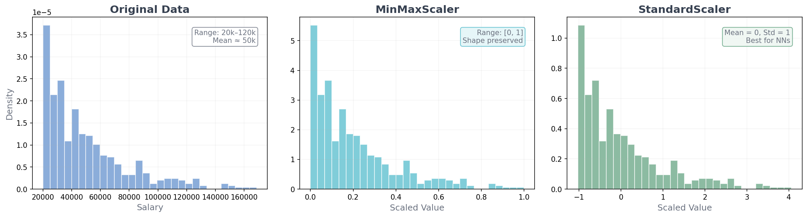
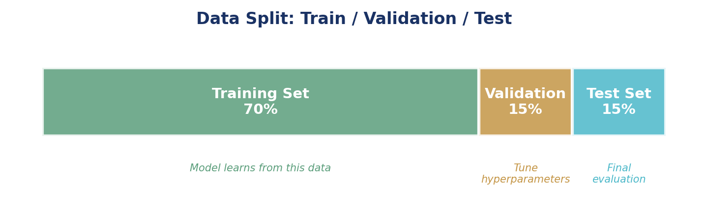
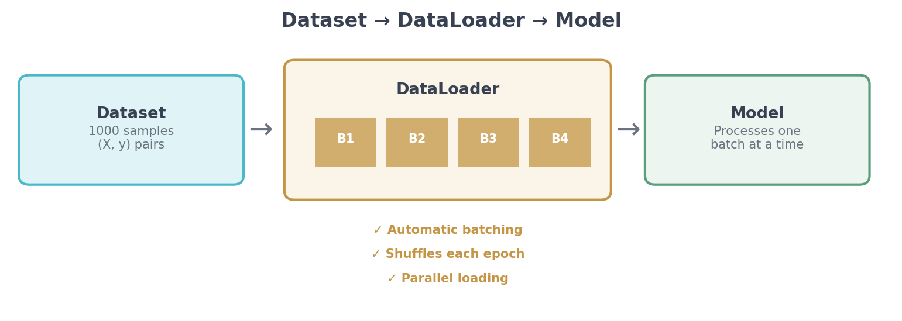
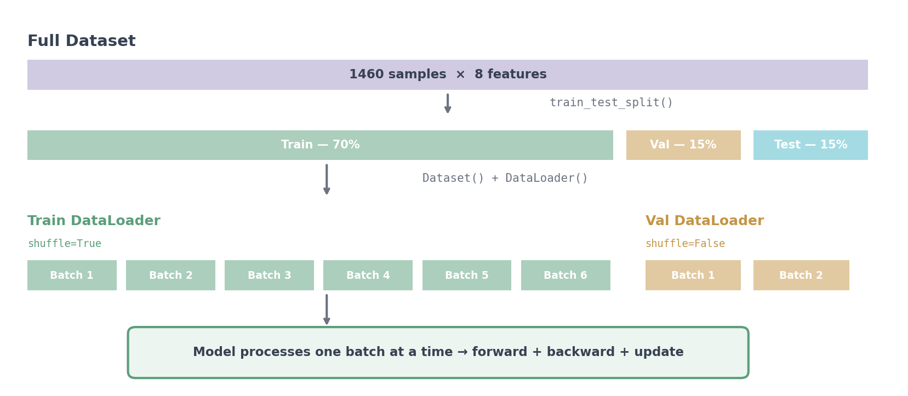
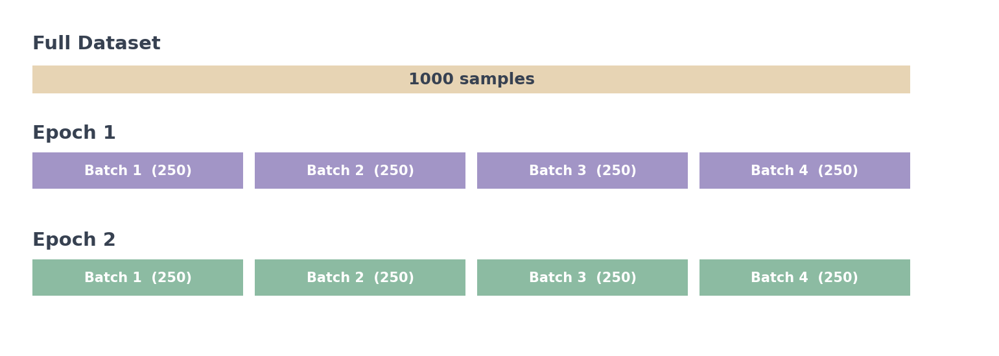
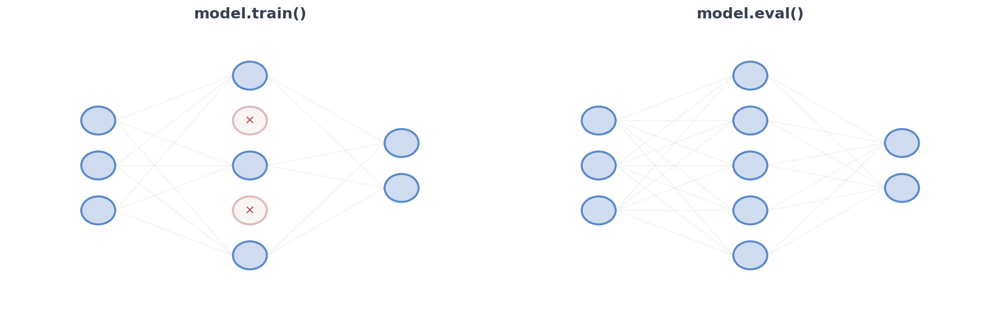
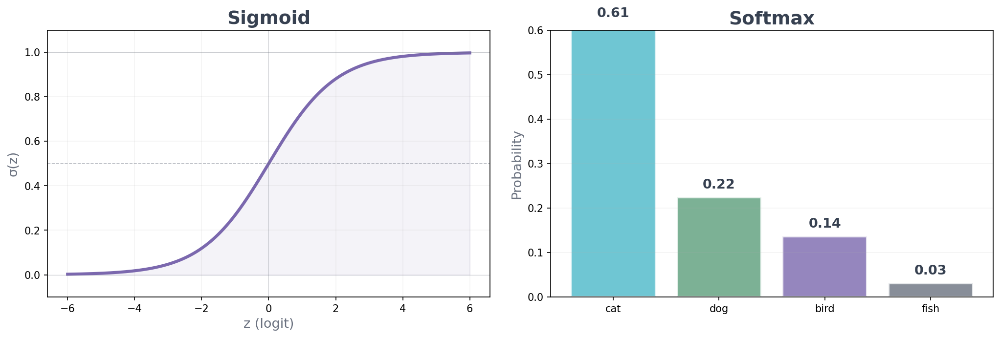
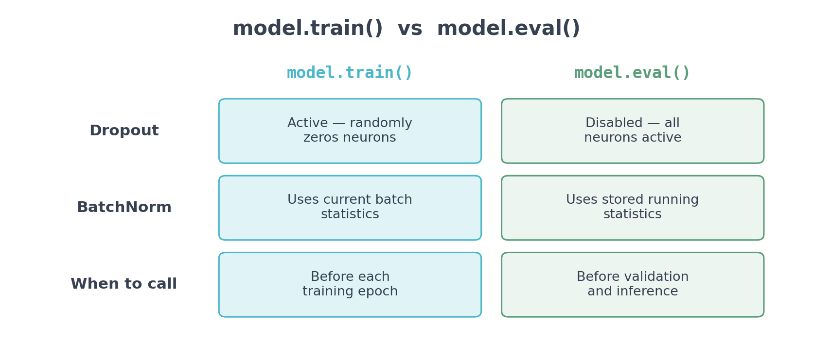
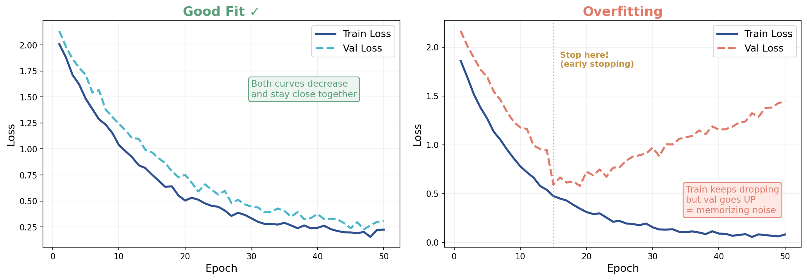
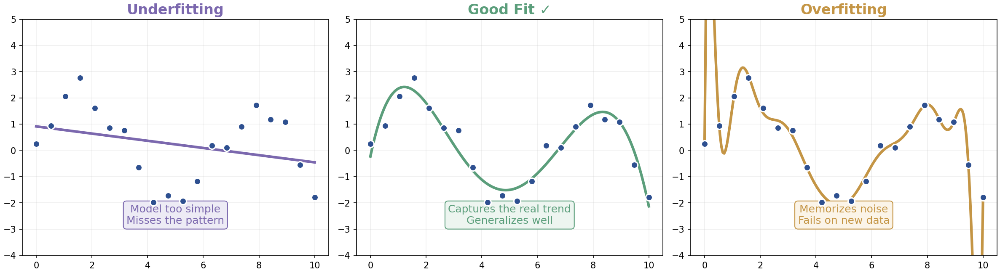

From raw data to production-ready models
Module 1 · Class 03 · Gen AI Engineer Course
Clean, encode categoricals, scale features, split into train/val/test
Custom Dataset class, batching, shuffling, and the epoch/batch/iteration loop
nn.Module with layers, dropout, batchnorm — and how to design the output layer
Train + validate per epoch, read loss curves, diagnose overfitting, run inference
Clean, engineer, encode, scale, split — before any model touches it
Raw data is never ready for a neural network. Every ML project follows these steps — in this order.
Real data is messy. Before anything else — fix the obvious problems.
# Check for missing values df.isnull().sum() # Option 1: Drop rows with missing values df.dropna() # Option 2: Fill with median (numeric) df['age'].fillna(df['age'].median()) # Option 3: Fill with mode (categorical) df['city'].fillna(df['city'].mode()[0])
# Remove duplicate rows df.drop_duplicates() # Check for outliers with IQR Q1 = df['price'].quantile(0.25) Q3 = df['price'].quantile(0.75) IQR = Q3 - Q1 # Filter out extreme outliers df = df[(df['price'] >= Q1 - 1.5*IQR) & (df['price'] <= Q3 + 1.5*IQR)]
Create new features that make patterns easier for the model to learn. The model can only learn from what you give it.
| Raw Feature(s) | Engineered Feature | Why It Helps |
|---|---|---|
date |
day_of_week, month, is_weekend |
Temporal patterns become explicit |
height + weight |
bmi = weight / height² |
Combines two features into one meaningful signal |
price + sqft |
price_per_sqft |
Normalizes price by size — easier to compare |
text |
word_count, has_url |
Extracts structure from unstructured data |
timestamp |
hours_since_last_event |
Captures recency — useful for user behavior |
Neural networks only understand numbers. Look at this dataset — which columns need conversion?
| age | color | size |
|---|---|---|
| 3 | brown | S |
| 5 | black | L |
| 2 | white | M |
| 4 | brown | L |
| 1 | black | S |
| species |
|---|
| cat |
| dog |
| bird |
| dog |
| cat |
For features with no natural order — each category becomes its own binary column.
| color | → | color_brown | color_black | color_white |
|---|---|---|---|---|
| brown | → | 1 | 0 | 0 |
| black | → | 0 | 1 | 0 |
| white | → | 0 | 0 | 1 |
| brown | → | 1 | 0 | 0 |
| black | → | 0 | 1 | 0 |
# pandas — quickest way pd.get_dummies(df, columns=['color']) # sklearn — for use in pipelines from sklearn.preprocessing import OneHotEncoder enc = OneHotEncoder(sparse_output=False) enc.fit_transform(df[['color']])
For features with a meaningful order. Maps categories to integers that preserve the ranking.
| size | → | size_encoded |
|---|---|---|
| S | → | 0 |
| L | → | 2 |
| M | → | 1 |
| L | → | 2 |
| S | → | 0 |
from sklearn.preprocessing import OrdinalEncoder oe = OrdinalEncoder(categories=[['S', 'M', 'L']]) df[['size']] = oe.fit_transform(df[['size']])
For the target variable. Maps each class name to an integer. CrossEntropyLoss expects integer labels.
| species | → | y |
|---|---|---|
| cat | → | 0 |
| dog | → | 1 |
| bird | → | 2 |
| dog | → | 1 |
| cat | → | 0 |
from sklearn.preprocessing import LabelEncoder le = LabelEncoder() y = le.fit_transform(df['species']) # cat → 0, dog → 1, bird → 2
Why scale? Features on different scales (salary in thousands vs age in tens) cause gradients to be dominated by the larger-scale feature. Scaling puts all features on a similar range — training becomes faster and more stable.

$$x' = \frac{x - \mu}{\sigma}$$
Mean = 0, Std = 1. Most common for neural networks.
$$x' = \frac{x - x_{\min}}{x_{\max} - x_{\min}}$$
Scales to [0, 1]. Good when you need bounded values.
from sklearn.preprocessing import StandardScaler, MinMaxScaler from sklearn.preprocessing import RobustScaler, MaxAbsScaler # also available scaler = StandardScaler() X_train = scaler.fit_transform(X_train) # fit on train ONLY X_val = scaler.transform(X_val) # transform val with train stats X_test = scaler.transform(X_test) # transform test with train stats
fit_transform on train only — fitting on all data leaks val/test info into the scaler.inverse_transform to convert predictions back to original units.
Every dataset gets divided into three non-overlapping subsets, each with a distinct role.

from sklearn.model_selection import train_test_split # First split: train vs temp (70% / 30%) X_train, X_temp, y_train, y_temp = train_test_split( X, y, test_size=0.3, random_state=42) # Second split: validation vs test (15% / 15%) X_val, X_test, y_val, y_test = train_test_split( X_temp, y_temp, test_size=0.5, random_state=42)
From raw arrays to batched, shuffled training data

Why not just pass numpy arrays or a DataFrame directly to the training loop?
PyTorch's DataLoader handles all of this — but it needs a Dataset object. You inherit from torch.utils.data.Dataset and implement two methods:
class CustomDataset(torch.utils.data.Dataset): """Inherits from Dataset so DataLoader can iterate over it.""" def __init__(self, X, y): self.X = X # feature tensor self.y = y # target tensor def __len__(self): return len(self.X) # how many samples def __getitem__(self, idx): return self.X[idx], self.y[idx] # one (features, target) pair
DataLoader calls __len__ to know when an epoch ends, and __getitem__ to grab each sample. You write 3 methods, PyTorch handles batching, shuffling, and parallel loading.

from torch.utils.data import DataLoader # Training: shuffle=True — random batch order each epoch train_loader = DataLoader(train_dataset, batch_size=32, shuffle=True) # Validation: shuffle=False — order doesn't affect evaluation val_loader = DataLoader(val_dataset, batch_size=32, shuffle=False) # Iterate — each batch is a (X_batch, y_batch) tuple for X_batch, y_batch in train_loader: print(X_batch.shape) # (32, num_features) break

for epoch in range(num_epochs): # outer loop: repeat over full dataset for batch in dataloader: # inner loop: one batch at a time train_one_step(batch) # forward + backward + update weights
| Term | Definition | In the figure |
|---|---|---|
| Epoch | One complete pass through the entire training dataset | 2 epochs |
| Batch | A subset of samples processed together | 250 samples |
| Iteration | One forward + backward + update on one batch | 4 per epoch |
Batch size affects training speed, memory usage, and gradient quality. Here's the tradeoff:
| Batch Size | Speed | Memory | Gradient Quality | When to Use |
|---|---|---|---|---|
| Small (8–16) | Slower | Low | Noisy — acts as regularization | Limited GPU memory, small datasets |
| Medium (32–128) | Fast | Moderate | Good balance | Default starting point |
| Large (256–1024) | Fastest | High | Smooth — may need lr warmup | Large datasets, big GPUs |
CUDA out of memory. The fix: reduce batch size. This is the most common reason to use smaller batches — not choice, but hardware constraint.
batch_size=32 — good default for most problems.From Sequential stacking to full nn.Module control
Class 02 used nn.Sequential — simple stacking. Now: nn.Module for full control.
model = nn.Sequential( nn.Linear(10, 64), nn.ReLU(), nn.Linear(64, 3) )
Layers execute top to bottom in fixed order. Quick to write but limited — can't add conditional logic or skip connections.
class MyModel(nn.Module): def __init__(self): super().__init__() self.fc1 = nn.Linear(10, 64) self.bn = nn.BatchNorm1d(64) self.drop = nn.Dropout(0.3) self.fc2 = nn.Linear(64, 3) def forward(self, x): x = F.relu(self.fc1(x)) x = self.bn(x) x = self.drop(x) return self.fc2(x)
You define the forward pass — add dropout, batchnorm, multiple inputs, skip connections, or any custom logic you need.
model(x). Never call model.forward(x) directly.
| Category | Layers | Purpose |
|---|---|---|
| Learnable Layers Have trainable weights |
nn.Linear, nn.Conv2d, nn.Embedding, nn.LSTM, nn.MultiheadAttention |
Transform data with learned parameters. The core of every model. |
| Activation Layers Introduce nonlinearity |
nn.ReLU, nn.GELU, nn.Sigmoid, nn.Tanh |
Shape the signal between layers. Without these, the network is just a linear function. |
| Downsampling Layers Reduce spatial dimensions |
nn.MaxPool2d, nn.AvgPool2d |
Compress feature maps in vision models. Paired with Conv2d. |
| Normalization Layers Stabilize training |
nn.BatchNorm1d/2d, nn.LayerNorm |
Normalize activations to stabilize gradients and speed up convergence. |
| Regularization Prevent overfitting |
nn.Dropout |
Randomly zeros neurons during training. Forces the network to learn robust features. |
| Utility / Structure Organize tensors |
nn.Flatten, nn.Sequential |
Reshape tensors or group layers. No learnable parameters. |
Full list: pytorch.org/docs/stable/nn.html

# In __init__: self.dropout = nn.Dropout(0.3) # randomly zeros 30% of neurons self.bn1 = nn.BatchNorm1d(hidden_size) # normalizes layer inputs # In forward(): x = self.bn1(x) # normalize activations x = self.dropout(x) # drop neurons (only during training)
Randomly zeros 30% of neurons during training. Forces the network to learn redundant representations — no single neuron can dominate.
Normalizes each layer's inputs to zero mean, unit variance per batch. Smooths the loss landscape — allows larger learning rates and faster convergence.
model.train() vs model.eval() — always switch explicitly.
Your output layer and loss function must match your task. Here are the three patterns:
self.output = nn.Linear(hidden, 1) # 1 output neuron criterion = nn.MSELoss() # no activation needed
self.output = nn.Linear(hidden, 1) # 1 output (logit) criterion = nn.BCEWithLogitsLoss() # loss applies sigmoid internally
self.output = nn.Linear(hidden, K) # K output neurons (one per class) criterion = nn.CrossEntropyLoss() # loss applies softmax internally
BCEWithLogitsLoss and CrossEntropyLoss apply sigmoid/softmax internally. Adding your own before the loss = applying it twice = broken training.
Two activation functions used at the output layer — not in hidden layers.

$$\sigma(z) = \frac{1}{1 + e^{-z}}$$
Maps one logit → one probability in (0, 1).
Use for binary classification.
$$\text{softmax}(z_i) = \frac{e^{z_i}}{\sum_j e^{z_j}}$$
Maps K logits → K probabilities that sum to 1.
Use for multiclass classification.
BCEWithLogitsLoss and CrossEntropyLoss apply them internally. Add them only at inference time to interpret outputs as probabilities.
The loop that makes your model learn
Every PyTorch project uses this same structure: train phase, then validate phase, every epoch.
for epoch in range(num_epochs): # --- TRAIN PHASE --- model.train() train_loss = 0 for X_batch, y_batch in train_loader: pred = model(X_batch) # forward pass loss = criterion(pred, y_batch) # compute loss optimizer.zero_grad() # clear gradients loss.backward() # compute gradients optimizer.step() # update weights train_loss += loss.item() # --- VALIDATION PHASE --- model.eval() val_loss = 0 with torch.no_grad(): for X_batch, y_batch in val_loader: pred = model(X_batch) val_loss += criterion(pred, y_batch).item() print(f"Epoch {epoch+1}: train={train_loss/len(train_loader):.4f} val={val_loss/len(val_loader):.4f}")
These two methods switch how dropout and batchnorm behave. You must call the right one at the right time.

model.train()model.eval()model.eval() during validation or inference means dropout randomly drops neurons — giving inconsistent, unreliable predictions.
The loss curve is your primary diagnostic tool. It tells you whether your model is learning, overfitting, or underfitting — at a glance.

Both train and val loss decrease together and converge. The gap between them stays small. This is what you want.
Train loss keeps dropping, but val loss starts rising. The model memorizes training data instead of learning general patterns.
The gap between the two curves tells you everything. Small gap = generalizing well. Growing gap = overfitting. Both flat = underfitting.

Model can't capture the pattern. Both train and val loss are high. Fix: more layers, more neurons, train longer.
Model captures the real pattern without memorizing noise. Train and val performance are close.
Model memorizes training data, fails on new data. Train loss is low, val loss is high. Fix: dropout, early stopping, more data.
After training, evaluate on the test set — data your model has never seen. Same preprocessing as training.
model.eval() with torch.no_grad(): outputs = model(X_test) predicted = torch.argmax(outputs, dim=1) acc = (predicted == y_test).float().mean() print(f"Accuracy: {acc:.1%}")
model.eval() with torch.no_grad(): preds = model(X_test) mse = nn.MSELoss()(preds, y_test) rmse = mse.sqrt() print(f"RMSE: {rmse:.2f}")
model.eval() — disable dropout, switch batchnorm to running statstorch.no_grad() — skip gradient tracking (saves memory)This is what runs in production — preprocess new input exactly like training data, then predict.
# 1. Preprocess — same steps as training new_raw = pd.DataFrame({'age': [5], 'color': ['brown'], ...}) new_encoded = preprocess(new_raw) # same encoding as training new_scaled = scaler.transform(new_encoded) # same scaler object from training x = torch.tensor(new_scaled, dtype=torch.float32) # 2. Predict model.eval() with torch.no_grad(): prediction = model(x) print(f"Predicted: {prediction.item():.2f}")
joblib.dump(scaler, 'scaler.pkl').
torch.save(model.state_dict(), 'model.pth')joblib.dump(scaler, 'scaler.pkl')joblib.dump(encoder, 'encoder.pkl')Clean → encode (one-hot, ordinal, label) → scale → split. Fit on train only.
Custom Dataset with __getitem__. DataLoader handles batching + shuffling.
__init__ declares layers. forward defines computation. Output layer matches your task.
Train + validate per epoch. model.train() vs model.eval() switches behavior.
Train vs val gap = overfitting. Both flat = underfitting. The curve tells you what to fix.
eval() + no_grad(). Same preprocessing for new data. Save model + scaler for production.